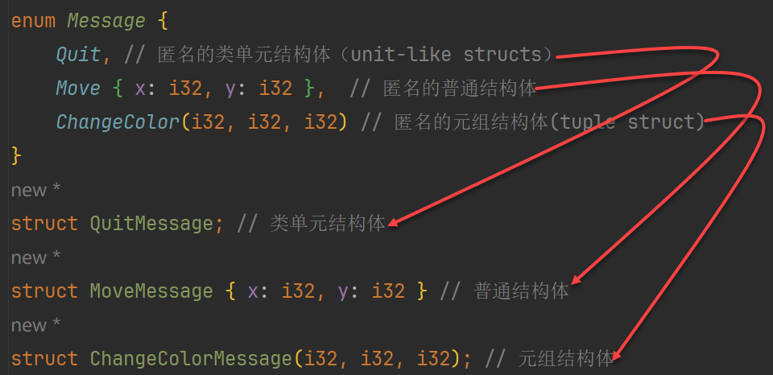
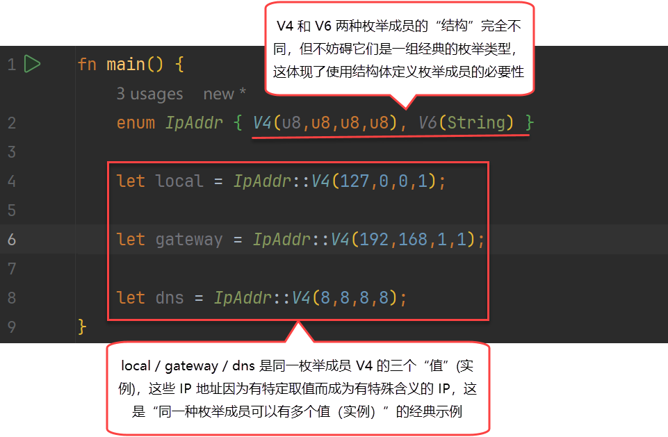

Rust 语言特性：枚举

1. 定义枚举
其实现代语言里的枚举 类 型都已“晋升”为一类（first-class）的，和 Class 是同等地位的，Rust 里的枚举也是如此。在 Rust 中， 枚举（Enum）是「结构体的容器与选择器」，枚举的每一个成员（variants），本质上都是一个匿名结构体 。这可以从代码上直接体现：
1 | enum Message { |
上述代码中的 Quit 、 Move 、 ChangeColor 这些在枚举中出现的每一个独立的实体称为 成员（variants） 。它们分别是三种不同类型的枚举成员：
-
Quit➪ “类单元结构体型”的枚举成员 -
Move { x: i32, y: i32 }➪ “普通结构体型”的枚举成员 -
ChangeColor(i32, i32, i32)➪ “元组结构体型”的枚举成员
这三种类型其实分别对应了三种结构体类型，这不是巧合。实际上，每一个枚举成员都会被编译器编译成一个类似于下面这样的结构体：

也就是说：定义枚举成员的语法和定义结构体的语法是完全一样的，除了没有 struct 关键字，而 enum Xxx 则像是一个 struts (复数)。
2. 枚举值
既然：枚举 ≈ 结构体的容器，那么 枚举值就是枚举成员的实例 ，所以，在定义了枚举之后，还要初始化枚举值。这和定义了结构体之后再创建结构体的实例是一样的。不过，根据枚举成员是否携带数据，枚举值的“性质”也会有所不同：
-
无数据枚举成员：
Message::Quit➪ 唯一常量值，单态 -
有数据枚举成员：
Message::Move{x:1, y:1}➪ 可以有多个实例，但均属同一类型（同一种枚举成员）
像 Message::Quit 这样的无数据枚举成员的实例是最容易理解的，也是枚举设计之初最朴实的含义：一种暗示为全局唯一的常量！而像 Message::Move{x:1, y:1} 和 Message::ChangeColor(255, 255, 255) 这样的有数据枚举成员的实例需要多一层理解，一个很重要的点是： 同一种枚举成员可以有多个值（实例） ！这怎么理解呢？还是看一个例子吧：IP 地址是特别经典的一个枚举类型的示例，因为 IPv4 和 IPv6 它们的格式明显不同，导致它们的字段数量和类型完全不同，这能很好地体现出普通结构体型的枚举成员的“灵活与适用性”。然后就是一些基于特定值而成为有特殊含义的 IP 地址，这是对：“同一种枚举成员可以有多个值（实例）”一种很好的诠释。

3. 枚举与泛型
枚举经常会和泛型一起搭配出现。标准库中的 Option<T> 枚举就是一个非常典型的例子。BTW，Rust 的 Option 和 Scala 里的 Option 简直一模一样，根据 Rust 的官方博客和文档，Rust 确实借鉴了 Scala 的 Option 和 Haskell 的 Maybe。Option 是一个很优雅的东西，用过的都说好。我们看一下 Option:
1 | enum Option<T> { |
Option<T> 枚举用于表达“一个有可能为空”的值” ，这是一个很用的设计或者说是“发明”，因为在以往的编程中 ，我们有太多地方需要“判空”了！而每次判空都要使用一个 if 语句，是一件琐碎而又不得不做的事， Option<T> 对值进行了一层简单的“包裹”（前面说过：枚举是「结构体的容器与选择器」），使得即使结果是一个空值，但因为是封装成了 None，也不会出现空值，这省去了大量“在中间过程中判空”的操作，或者说是“推迟”了判空，只在必须要针对空值做出响应时再进行，当需要需要判空时，再借助 match 语法，可以很优雅的实现判空。最能体现 Option 实用而优雅的例子就是从 map 中根据一个 key 取得它的 value，由于 map 中未必含有传入的 key 对应的 value，所以返回一个 Option 就成了最好选择。可以参考 HashMap 的 [ 官方示例 ] 。
由于 Option 被设计为可以是任何一种类型的值，所以它必须是一个泛型枚举。 Option<T> 枚举是如此有用以至于它甚至被包含在了 prelude 之中，你不需要将其显式引入作用域。另外，它的成员也是如此，可以不需要 Option:: 前缀来直接使用 Some 和 None 。即便如此 Option<T> 也仍是常规的枚举， Some(T) 和 None 仍是 Option<T> 的成员。
4. 枚举与模式匹配
枚举最典型的应用场景就是模式匹配了，而 Rust 中的模式匹配也是非常优雅的（又与 Scala 中的模式匹配极为相似），所以，在 Rust 中，使用枚举搭配模式匹配进行分情况处理是极其舒适和自然的。我们来看一下例子：
1 | enum Coin { |
几乎不需要做任何解释，枚举 + 模式匹配的语法凝练直观，可以说是“一看就懂”。再看一下 Option 和 模式匹配协同工作的代码，可以说是“极为舒适”：
1 | fn plus_one(x: Option<i32>) -> Option<i32> { |
Rust 中的匹配是穷举式的（exhaustive）：必须穷举到最后的可能性来使代码有效。特别的在这个 Option 的例子中，Rust 防止我们忘记明确的处理 None 的情况，这让我们免于假设拥有一个实际上为空的值，从而使之前提到的价值亿万的错误不可能发生。
参考资料 ：
https://rustwiki.org/zh-CN/rust-by-example/custom_types/enum.html
Rust 语言特性：枚举